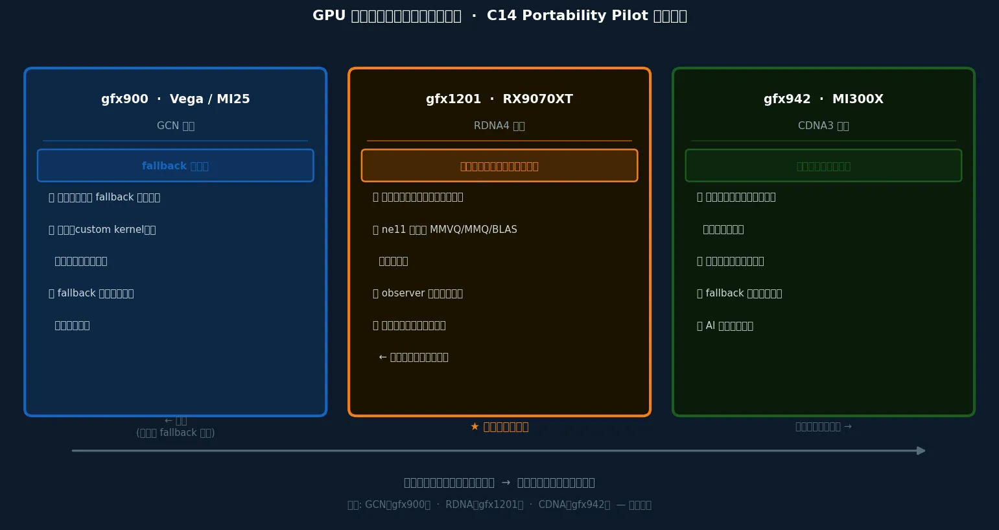
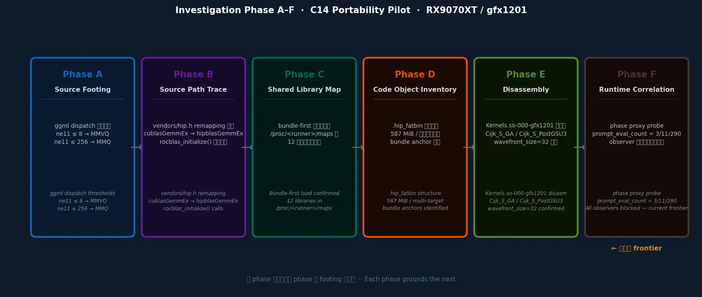

このページで得られる理解：RX9070XT 調査が「何を問い、何が見えて、何が見えないのか」——データページを読む前に、この文脈を掴む。
What you'll gain here: what the RX9070XT investigation is asking, what can be seen, and what cannot — context to grasp before reading the data pages.
この調査（C14 portability pilot）は、MI25（AMD の古い世代の GPU）で確立した観測方法論を RDNA4（新しい世代）に移植する試みだ。
ところが、MI25 で当然のように使えた観測ツールが RDNA4 では軒並み機能しない。
その「機能しない」という事実が、そのまま研究の成果になる。
RDNA4 / gfx1201 が特に面白いのは、GPU 世代としてちょうど「本命経路（最適化された専用の計算ルート）が通るかどうか」の境界にいるからだ。
fallback（本命が使えないとき、別ルートに切り替えること）だけの世代でも、本命だけの世代でもない——観測しなければ分からない。
This investigation (C14 portability pilot) is an attempt to transplant the observation methodology established
for MI25 (an older AMD GPU generation) onto RDNA4 (a newer generation).
But the observation tools that worked naturally for MI25 fail across the board on RDNA4.
That fact — "it doesn't work" — is itself the research finding.
RDNA4 / gfx1201 is particularly interesting because, as a GPU generation, it sits right at the boundary of "does
the primary path (the optimized, dedicated compute route) actually run?"
Neither pure-fallback (switching to an alternate route when the primary is unavailable) nor pure-primary — you have to observe to know.
もう少し具体的に言うと——GPU の中では、行列同士のかけ算（GEMM: LLM の推論の大半を占める演算）が どの「仕事の担当カーネル（kernel: GPU の中で動く個々の仕事の単位）」に回されているかを、 実行時にしか確認できない。 ソースコードに経路が書いてあっても、実際にその経路を通るかどうかは動かしてみないと分からない。
To be more specific — inside the GPU, which "kernel (the individual job unit running inside the GPU)" handles the matrix multiplication (GEMM: the operation dominating most of LLM inference) can only be confirmed at runtime. Even if the source code describes a path, whether it's actually taken cannot be known until it runs.
たとえ話： 工場の機械が動いている。仕事の量によって「担当ライン A」か「担当ライン B」かを自動で選ぶ。 どちらのラインが動いているか知りたい。でも、確認しようとして機械に手を触れると止まってしまう。 だから「機械から出てくるメーターの数字」を読んで、どちらが動いているかを推理する——これがこの調査の本質だ。
An analogy: A factory machine is running. Depending on workload, it automatically selects "Line A" or "Line B." We want to know which line is active. But touching the machine to check makes it stop. So we read the meter numbers that come out from the machine, and reason about which line is running — that is the essence of this investigation.
Q4_1 -> Q4_K -> Q5_0 -> Q5_1 -> Q5_K -> Q6_K -> Q8_0 -> Flash と並ぶ。Q4_1 -> Q4_K -> Q5_0 -> Q5_1 -> Q5_K -> Q6_K -> Q8_0 -> Flash.MMVQ -> MMQ -> BLAS fallback になる。MMVQ -> MMQ -> BLAS fallback.この研究と観測を理解するために： RX9070XT (gfx1201) は GPU 世代の中でどんな立ち位置にあるのか？
To understand this investigation and observations: Where does RX9070XT (gfx1201) sit among GPU generations?
GPU 世代を横断してこの調査を理解するには、単なる「サポート状況の違い」としてではなく、 各世代が持つ「観測の世界観」の違いとして捉える必要がある。
To understand this investigation across GPU generations, the difference is not simply "support status" — it is the difference in what each generation's world of observation looks like.
| 世代Generation | GFX | 観測の世界観Observation Worldview | 研究上の役割Research Role |
|---|---|---|---|
| Vega / MI25Vega / MI25 | gfx900 |
古い世代のため、fallback が主戦場。本命経路は通らない前提で観測する。fallback の構造を正確に記録することが研究の価値。 Fallback is the main stage. Observe under the assumption the primary path won't run. Accurately mapping the fallback structure is the research value. | fallback 観測Fallback observation |
| RDNA4 / RX9070XTRDNA4 / RX9070XT | gfx1201 |
新しいが、民生用GPUであるため、通るものと通らないものが混在。観測しないと分からない。fallback でも本命でもない——"分岐そのもの"を観測する世代。研究として最も面白い。 Mixed: some paths run, some don't. Must observe to know. Neither pure-fallback nor pure-primary — this generation observes "the branching itself." Most interesting as research. | 分岐観測 ← 今ここBranch observation ← here |
| MI300XMI300X | gfx942 |
現行フラッグシップであるためほぼ本命が通ると見られる（要確認）。正規ルートの確認が主。fallback 観測は副次的。ただし MI400X 登場も噂されており、陳腐化は不可避。 Primary path expected to run (needs confirmation). Verifying the canonical path is the main work. Fallback is secondary. However, MI400X rumors make obsolescence inevitable. | 本命確認（予定）Primary confirmation (planned) |

クリックで拡大 · gfx900 / gfx1201 / gfx942 の観測世界観の違い
Click to enlarge · Observation worldview differences across gfx900 / gfx1201 / gfx942
観測ポイント： MI25 で確立した方法論は RDNA4 でそのまま使えるのか？
Observation target: Does the methodology established for MI25 work directly on RDNA4?
MI25 調査では「observe first, then optimize（まず観測し、それから最適化する）」の手順で観測クラスを確立した。
3本の柱——rocprofv3（AMD GPU の標準観測ツール）による kernel（GPU の仕事の単位）追跡・ROCBLAS_LAYER ログ・プロセスマップ観測——で「何が実行されたか」を直接確認できた。
C14 pilot はこの方法論を RX9070XT へ持ち込む試みだ。
The MI25 investigation established an observation class using an "observe first, then optimize" procedure.
Three pillars — rocprofv3 (AMD's standard GPU observation tool) kernel tracing,
ROCBLAS_LAYER logging, and process map observation — allowed direct
confirmation of what was executed.
C14 pilot is the attempt to bring this methodology to RX9070XT.
Phase A–F はその切り分けのための設計。 ソース追跡で理論的な分岐を固め（A/B）、ライブラリ（プログラムの部品）とバイナリ（実際に動く実行コード）の存在を確認し（C/D）、逆アセンブリ（実行コードを人間が読める形に変換すること）で実体を掴み（E）、runtime proxy（直接観測の代わりに外から読める値を手がかりにする手法）で近似相関を取る（F）。 → 次の問い： しかし、この手順を RDNA4 で実行しようとすると、何が壊れるのか？
Phase A–F is the design for this disambiguation. Fix theoretical branches in source (A/B), confirm library and binary existence (C/D), grasp substance via disassembly (E), get approximate correlation via runtime proxy (F). → Next question: But when we try to execute this procedure on RDNA4, what breaks?

クリックで拡大 · Phase A–F の調査フロー（現在の frontier: Phase F）
Click to enlarge · Phase A–F investigation flow (current frontier: Phase F)
調査の出発点は単純な疑問だ：「RX9070XT 上で Ollama が Q4_K_M モデルを動かすとき、GPU の中で何が起きているのか？」 これを追うために Phase A〜F を設計した。各フェーズで「何が知りたかったか」「何をしたか」「期待と結果のギャップ」を平易にまとめる。
The investigation starts from a simple question: "When Ollama runs a Q4_K_M model on RX9070XT, what is happening inside the GPU?" Phases A–F were designed to pursue this. Below is a plain-language summary of what each phase wanted to know, what was done, and where expectation and reality diverged.
| Phase | 何が知りたかったかWhat we wanted to know | 何をしたかWhat was done | 期待 vs 結果Expected vs. Actual |
|---|---|---|---|
| A | ソースの dispatch 分岐はどこにあるか？どんな条件で kernel が切り替わるか？ Where are the dispatch branches in source? Under what conditions do kernels switch? |
ggml / Ollama のソースを追跡し、ggml_cuda_mul_mat() の ne11 閾値（≤ 8 / ≤
256）を特定した。
Traced ggml / Ollama source and identified ne11 thresholds (≤ 8 / ≤ 256) in
ggml_cuda_mul_mat().
|
期待通り確定Confirmed as
expected 分岐はソースで明確に読めた。 Branches were clearly readable in source. |
| B | Ollama から GPU kernel までの呼び出しチェーンはどうなっているか？ What does the call chain from Ollama to GPU kernel look like? | Ollama → ggml → hipBLAS / custom kernel の経路をソースで追跡した。 Traced Ollama → ggml → hipBLAS / custom kernel path through source. |
期待通り確定Confirmed as
expected 呼び出しチェーンをソースで完全に追えた。 Full call chain confirmed through source. |
| C | 実際に動く Ollama プロセスはどのライブラリをロードしているか？ Which libraries does the running Ollama process actually load? |
/proc/<runner>/maps を確認し、12 ライブラリのロードを確認した。
Checked /proc/<runner>/maps and confirmed 12 libraries loaded.
|
確定（ただし load ≠ dispatch）Confirmed (but load ≠ dispatch) ロードは確認できた。しかし「ロードされている = 使われている」ではないことも同時に発見。 Loading confirmed. Also discovered simultaneously that "loaded ≠ dispatched." |
| D | gfx1201 向けのバイナリは実際に fatbin に入っているか？どの kernel が存在するか？ Are gfx1201 binaries actually present in the fatbin? Which kernels exist? |
libggml-hip.so の .hip_fatbin（587 MiB）を解析し、gfx1201 向け hsaco
を列挙した。
Analyzed the .hip_fatbin (587 MiB) in libggml-hip.so and
enumerated gfx1201 hsacos.
|
期待通り確定Confirmed as
expected MMVQ / MMQ / BLAS の gfx1201 binary はすべて存在した。 gfx1201 binaries for MMVQ / MMQ / BLAS all exist. |
| E | Q4_K を担う具体的な kernel の register footprint・命令パターンは？ What are the register footprints and instruction patterns of the specific Q4_K kernels? | Q4_K 候補 bundle を isolate し逆アセンブルした（bundle_0030 / bundle_0096 等）。 Isolated and disassembled Q4_K candidate bundles (bundle_0030 / bundle_0096, etc.). |
期待通り確定Confirmed as
expected gfx1201 固有の wavefront_size=32 を確認。v_mfma は検出されず。 gfx1201-specific wavefront_size=32 confirmed. No v_mfma detected. |
| F | live run で実際にどの dispatch 圏に入っているか？runtime を壊さずに確認できるか？ Which dispatch zone does a live run actually enter? Can this be confirmed without breaking the runtime? | rocprofv3・--attach・ROCBLAS_LAYER を試みたが全滅。消去法で phase proxy（response JSON）を採用し probe を実施した。 Tried rocprofv3, --attach, and ROCBLAS_LAYER — all blocked. By elimination, adopted phase proxy (response JSON) and ran probes. |
近似のみ確定・直接確認は不可Approximate only — direct confirmation blocked current best reading は pure-MMVQ ではなく mixed-by-phase。decode 側は MMVQ-compatible、short/medium prompt 側はすでに MMQ-eligible と読むのが最も筋がいい。ただし dispatch-safe observer がなく、直接確認はできない。これが現在の frontier。 The current best reading is not pure MMVQ but mixed-by-phase. Decode looks MMVQ-compatible, while short/medium prompt windows already read as MMQ-eligible. However, without a dispatch-safe observer, direct confirmation is still impossible. This is the current frontier. |
観測ポイント： 各 observer を試した結果、何が起きたか。
Observation target: What happened when each observer was tried?
RDNA4 調査で最初に直面する壁は、観測ツールが軒並み機能しないことだ。 これは「調査が失敗した」のではなく、「RDNA4 の runtime model がツールチェーンの想定と異なる」という発見。 各手段を試した結果：
The first obstacle in the RDNA4 investigation is that observation tools fail across the board. This is not "the investigation failed" — it is the discovery that RDNA4's runtime model differs from what the toolchain assumes. Results from each attempt:
| 手段Approach | 結果Result | 何が起きたか / 何が分かったかWhat happened / What it reveals |
|---|---|---|
rocprofv3 wrap |
無効（CPU fallback）Invalid (CPU fallback) | profiler の介在が Ollama の GPU bootstrap discovery を壊す。GPU 自体が使われなくなる。この状態のデータは observer 汚染として扱う。 Profiler interposition breaks Ollama's GPU bootstrap discovery. The GPU stops being used. Data in this state is treated as observer-contaminated. |
rocprofv3 --attach |
ブロックBlocked |
ホストの ptrace_scope=1 が ptrace attach を拒否。OS のカーネルセキュリティ設定であり、変更はスコープ外。
Host ptrace_scope=1 rejects ptrace attach. OS kernel security setting —
changing it is out of scope.
|
ROCBLAS_LAYER=9 |
部分のみPartial only |
rocblas_create_handle のみ記録。per-GEMM の dispatch 追跡には不足。Q4_K の custom kernel
経路は見えない。
Only rocblas_create_handle logged. Insufficient for per-GEMM dispatch
tracking. Custom kernel paths for Q4_K are invisible.
|
| phase proxy（response JSON）phase proxy (response JSON) | 有効（近似）Valid (approximate) | runtime を壊さない唯一の現実的な手段。他が全滅した消去法の結果として残った。 The only practical means that doesn't break the runtime. What remains by elimination after all others failed. |
ここから分かること：
ツールが壊れた理由を特定できることが重要。これらは「観測の失敗」ではなく「観測窓の構造的限界の確認」。
→ 次の問い： observer が壊れているとき、「見えない」ことは2種類ある。それをどう切り分けるか？
What this tells us:
Being able to identify why tools fail is what matters. These are "confirmed structural limits of the observation
window," not "observation failures."
→ Next question: When an observer is broken, "invisible" has two possible causes. How do we
distinguish them?
観測ポイント： 何かが観測されないとき、それはどちらの原因か。
Observation target: When something is not observed, which cause is it?
/proc/maps に現れないのは、Ollama の LLM 推論経路が MIOpen
を使用しないから（bundle にも含まれていない）。
It is genuinely not happening, or the path leading to it is not entered. Example: MIOpen not
appearing in /proc/maps can be read as Ollama's LLM inference path not using MIOpen (it is also
absent from the bundle).
この切り分けが、本調査の中心的な知的作業。
dispatch-safe observer がない状態では、多くの「見えない」は原因A と B が区別できない。
それを区別できた事例・できなかった事例を正直に記録することが、この調査の価値になる。
→ 次の問い： ライブラリがロードされているとき、それは「使われている」ことを意味するのか？
This distinction is the central intellectual work of this investigation.
Without a dispatch-safe observer, cause A and cause B cannot be distinguished for many "invisibles."
Honestly recording which cases could be distinguished and which could not is where this investigation's value
lies.
→ Next question: When a library is loaded, does that mean it is being used?
観測ポイント： /proc/maps でライブラリが見えるとき、そのライブラリの演算は実行されているのか。
Observation target: When a library appears in /proc/maps, is that
library's compute actually being dispatched?
Phase C の調査で、Ollama runner の /proc/maps に libhipblaslt.so.0.10.60303 が記録されていることを確認した。
これは事実：「hipBLASLt がロードされている」。
しかしここから「hipBLASLt の演算が LLM 推論ループで dispatch された」とは言えない。
Phase C confirmed that libhipblaslt.so.0.10.60303 appears in the Ollama runner's
/proc/maps.
This is the fact: "hipBLASLt is loaded."
From this, however, it cannot be stated that "hipBLASLt operations were dispatched during the LLM inference
loop."
なぜ区別が必要か。Q4_K_M 推論では ne11（バッチサイズ相当）の値に応じてカーネルが分岐する。
decode フェーズ（トークン生成）の多くは ne11 が小さく、MMVQ や MMQ の custom HIP kernel が主経路になる。
BLAS fallback（hipBLAS → rocBLAS → hipBLASLt）は ne11 が大きい prefill か、特定 shape の場合に限られる可能性がある。
Why does the distinction matter? In Q4_K_M inference, kernels branch based on ne11 (analogous to
batch size).
Most of the decode phase (token generation) likely has small ne11, where MMVQ and MMQ custom HIP kernels are the
primary paths.
The BLAS fallback (hipBLAS → rocBLAS → hipBLASLt) may only be reached during the large-ne11 prefill phase, or
for specific shapes.
観測ポイント： runtime を一切壊さずに、dispatch 圏の近似を読める手段があるか。
Observation target: Is there any means to approximate the dispatch zone without touching the runtime at all?
wrap も attach も layer log も機能しない状況で、改めてソース側の dispatch（GPU へどの仕事を回すかの割り当て）分岐を確認した。
MMVQ（1トークンずつ返す場面で使われやすい専用カーネル経路）/ MMQ（最初にプロンプトをまとめて読む場面で使われやすい専用カーネル経路）の分岐は、
ne11（行列の列数——この調査では、だいたいプロンプトのトークン数に対応）で決まる。
Ollama の response JSON の prompt_eval_count（Ollama が返す「プロンプトを何トークン処理したか」の数値）を
ne11 の近似指標として使えないか——それが phase proxy。
With wrap, attach, and layer log all non-functional, we revisited the source dispatch logic
(dispatch = the assignment of which job goes to the GPU).
The MMVQ (the dedicated kernel path favored in single-token generation) / MMQ
(the dedicated kernel path favored when reading the full prompt upfront) branch is
determined by ne11 (matrix column count — in this investigation, roughly corresponding to prompt token count).
Could prompt_eval_count in Ollama's response JSON (the number "how many prompt tokens were processed" that Ollama returns)
serve as a proxy for ne11? — that is the phase proxy.
prompt_eval_count を読む → 3ne11 = 3 ≤ 8 → MMVQ の担当圏に入っているはず と推理prompt_eval_count を読む → 118 < ne11 ≤ 256 → MMQ の担当圏に入っているはず と推理prompt_eval_count from the response JSON → 3ne11 = 3 ≤ 8 → infer "it's in MMVQ territory"prompt_eval_count → 118 < ne11 ≤ 256 → infer "it's in MMQ territory"
With wrap, attach, and layer log all non-functional, we revisited the source dispatch logic.
The MMVQ/MMQ branch is determined by ne11 (≈ prompt token count).
Could prompt_eval_count in Ollama's response JSON serve as a proxy for ne11? — that is
the phase proxy.
| probe ケースProbe Case | prompt_eval_count |
現時点で最も筋のいい読みStrongest current reading |
|---|---|---|
| threshold 未満Below threshold | 7 / 8 | MMVQ 圏（ne11 ≤ 8）MMVQ zone (ne11 ≤ 8) |
| threshold 超えAbove threshold | 9 / 11 / 12 | MMQ-eligible 圏（bundle_0096 候補）MMQ-eligible zone (bundle_0096 candidate) |
| boundary 候補Boundary candidate | 290 | MMQ/BLAS 境界付近（未確定）Near MMQ/BLAS boundary (unresolved) |
| decode-heavyDecode-heavy | 3 | eval_count=16 / 0.1479s（decode ベースライン）eval_count=16 / 0.1479s (decode baseline) |
prompt_eval_count は response JSON の値であり、kernel launch 時の実際の
ne11 を直接読んでいない。
chunked prefill や KV cache の挙動によって同じトークン数でも ne11 が変わりうる。
上の読みは「最も筋のいい解釈」であり、本来は dispatch-safe observer による直接確認が必要。
Proxy limitations: prompt_eval_count is from the response JSON — not a direct
reading of ne11 at kernel launch.
Chunked prefill or KV cache behavior could cause ne11 to differ even for the same token count.
The readings above are "strongest current interpretations" — direct confirmation by a dispatch-safe observer
is the proper requirement.
各ページで使われているバッジと callout は、情報の確度を色で示す。なぜなら、「未確定が多い」ことは品質の低さではなく、むしろ未確定を正直に記録することがこの調査における品質基準だからである。
Badges and callouts across pages indicate confidence level by color. "Many unresolved items" does not indicate low quality — honestly recording what is unresolved is the quality standard of this investigation.
| 表示Display | 意味Meaning |
|---|---|
| 確認済み / Confirmed | 実機コマンド・ログ・ファイル存在・逆アセンブリ等で直接確認した事実Directly confirmed via live commands, logs, file presence, or disassembly |
| 推論 / Inferred | 確認した事実から論理的に導かれる解釈。直接確認はしていないInterpretation logically derived from confirmed facts. Not directly confirmed |
| 未確定 / Unresolved | 現時点では確定できない事項。observer 制約または未実施の観測によるCannot be determined at this stage, due to observer constraints or observations not yet performed |
| 制約あり / Limited | 部分的に確認できているが、tool 制限により完全ではないPartially confirmed, but incomplete due to tool limitations |
このページで文脈を掴んだら、以下の順で読むと調査の流れを追いやすい。
Now that you have the context, reading in the following order makes the investigation flow easiest to follow.